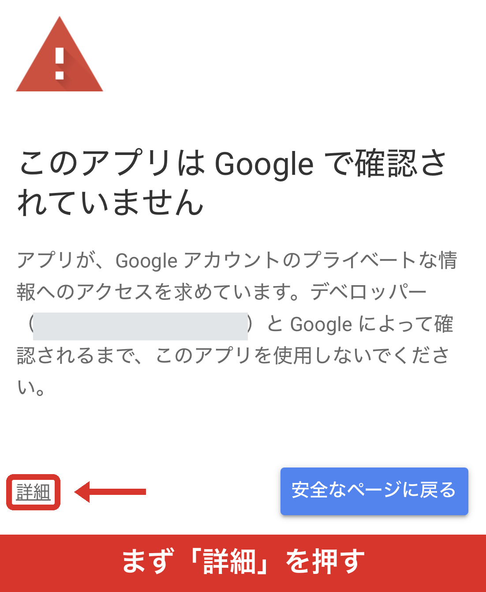

気軽に空撮＆練習マップ
「あそこ、飛ばしていいんだっけ？」
を、みんなで持ち寄った地図です。
「あそこ、飛ばしていいんだっけ？」
を、みんなで持ち寄った地図です。
Googleでログインします。メンバー向けです。合言葉はLINEにあります。
はじめての方は、下の「はじめての方へ」を先にお読みください。
入るまでに、少しつまずくところがあります。先にここだけ読んでください。
途中で 赤い警告 が出ますが、こわれてはいません。
2回押せば越えられます。

Google ではこのアプリを確認していません。
続行するとリスクが生じる可能性があります。
気軽に空撮＆練習マップ（安全ではないページ）に移動
なぜ赤い警告が出るのか。 仲間内だけで使う道具なので、Googleの審査を通していないからです。 審査には会社の登録や年ごとの費用が要ります。 中身は Google のサーバーで動いていて、書いたものはみんなの表に入るだけです。
うまくいかないときは、遠慮なく聞いてください。 ひとりで粘らないでください。集まりのときに、その場で入れることもできます。
2026年8月
ほっしーが集めてくれた確認リストから39か所、投稿フォームから8か所。 どこへ何を出すか、電話したら何と言われたかまで、窓口ごとに入っています。
黒い線が送電線です。ぶつければ、その場で終わりです。 ただし有志のデータなので抜けがあります。線が無いから安全とは思わないでください。
燃料式のドローンと、本体やバッテリーが大きい機体は、ロープウェイに乗せられません。
これを知らずに行くと、標高2,600mまで上がってから引き返すことになります。 こういう「行ってみて言われたこと」が、この地図でいちばん値打ちのあるところです。
ピンの色と絵で、その場所がどういう場所かが分かります。


飛行禁止空域7種類（空港のまわり・管制圏・民間訓練試験空域・特別管制区・進入管制区・レッドゾーン・イエローゾーン）／人口集中地区（DID）／送電線／空港・飛行場。
空域は国土交通省航空局と警察庁のデータそのものです。目安の円ではありません。場所を開くと「何メートルより上が制限か」まで出ます。
場所ごとに、空撮動画も付けてあります。
ホーム画面に置いておくと、次からは一発で開けます。